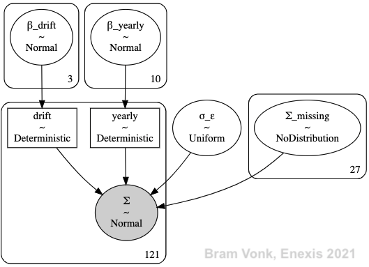

The Grid Planners are looking to data driven forecast with a uncertainty indication as mentioned before. This is visualized as a concept in the figure below.
A possible output of the model visualized.
The Grid Planners want to have a result dat is based on real observed data. Or, to make it more explicit: Data that has been measured and not data from possible scenarios with a wide range of uncertainty.
Another suggestion was made to use (historic) weather data as an exogenous feature / input for the model. However, this is not data we have available with a reasonable confidence for the forecast horizon (in the future). And seasonality can also be captured from the observed data itself for different timeseries models.
Therefore, the model only uses historic DALI measurement data.
A model will be fitted / tuned for every DALI measurement extremes since every transformer has it’s own unique signal (src.forecast.forecast.determine_estimates()).
src.forecast.forecast.determine_estimates()
A model is trained on observed data, a forecast is made and stored and finally the trained model is discarded (src.forecast.forecast.forecast()).
src.forecast.forecast.forecast()
The weekly extremes are loaded for tuning the model. The model forecasts are afterwards stored in a Snowflake database.
The next time a forecast is required, new data is available and a new model will be fitted and used for forecasting.
A probabilistic approach has been implemented to fulfill the wish to forecast and display uncertainty rather than a point estimate.
From the main probabilistic toolboxes (STAN, EDWARD2, Pyro, TensorFlow2 Probability) PyMC3 was used for it’s extensive documentation. A future step could be to transfer the model into TensorFlow2 Probability since PyMC3 is not the most recent toolbox anymore.
To address the explainability of the model, a similar approach as Facebook Prophet is used. The model is a Generalized Additive Model (GAM) that consists of a trend / drift and seasonality component (and an error component). The translation to PyMC3 of Richie Vink was used as a basis.
The GAM approach makes it easy to decompose the different components of the timeseries and show the Grid Planners the effect of the drift and seasons separately.
To evaluate the model the observed data is split into a train and test set based in the forecast horizon (src.preprocess.preprocess.split_last()). After splitting the train set is tested again for not being too short (at least two years: src.preprocess.preprocess.too_short()).
src.preprocess.preprocess.split_last()
src.preprocess.preprocess.too_short()
The split of measurement data into train and test data.
The test set is only used to validate forecasting results. The train set is used to train / fit / tune the model.
The GAM model used is (src.model.model.create_model()):
src.model.model.create_model()
The additive naming is explicit in this notation.
The error component has a has a bandwidth of \(σ_ε\).
According to the Grid Planners a increasing growth is more and more common due to the energy transition. Therefore, a stable drift model (src.model.model.drift_model()) is used that can mimic that. An exponential function resulted in divergence during the model tuning, but a second order taylor series makes the model convergent and stable.
src.model.model.drift_model()
The drift component model with a taylor series with the order of \(n\) is described as:
For modelling a drift that has the described growth, a polynomial with order \(n=2\) is used.
Since the data has been aggregated into weekly extremes, the only seasonality to model is the yearly pattern. The yearly seasonality is modeled with \(n\) order fourier series (src.model.model.seasonality_model()). This based on the work of Richie Vink.
src.model.model.seasonality_model()
The yearly seasonality model is described as:
Here the \(T\) is the period of the seasonality in unit of time of the data. The is unit of time in case is a week for the data and a year in weeks is \(T=52.1775\). The order taken for the fourier series is \(n=5\).
The model parameters (\(β\))’s can now be tuned to produce the model is most likely to produce the observed (measurement) data.
To forecasting, the model also needs to produce beyond the timestamps it has been tuned on. The PyMC3 model can cope with this by feeding it with timestamps that are extrapolated for the forecasting horizon (src.preprocess.preprocess.extrapolate_timestamps()).
src.preprocess.preprocess.extrapolate_timestamps()
The matching observations (measurements) can be intentionally filled with NaN’s. in the model PyMC3 will name them \(Σ_missing\). (This characteristic makes the model also robust against missing data).
By sampling the posterior predictive after tuning, also samples are generated for the extrapolated forecast timestamps (src.forecast.forecast.determine_estimates()).

The total model visualized.
Two separate GAM models \(Σ\) (src.model.model.create_model()) are used for the weekly minimum and maximum.
The visual above shows the total GAM model with a polynomial drift order \(n=2\) (the bias of order 0 explains \(N+1=3\)) and a fourier order of \(n=5\) (the sine and cosine parts explain \(N*2=10\)).
The number of observations (weeks of measurements for this case) was 121 and the forecasting horizon was just more than six months (27 weeks).
From the model posterior predictive samples are drawn for all timestamps (also measurement timestamps, 1000 samples per timestamp).
From the posterior samples, the quantile bands are determined (src.forecast.format.make_quantile_bands()). This reduces the data storage.
src.forecast.format.make_quantile_bands()
The upper and lower limits of the quantile bands are then stored in the same format as the input (src.forecast.format.format_model_estimates()). The input of the model and the output are then concatenated together. This eases the visualization later.
src.forecast.format.format_model_estimates()
The concatenated input and result.
The following model findings are most salient:
Exponential drift function tuning will not converge.
CPU: 2 GHz Quad-Core Intel Core i5
RAM: 16 GB
The splitting of observations into train and test set works.
The extrapolation with the forecasting horizon works.
Growth also increases the yearly component.
A pure multiplicative diverges.
A hybrid model (addition of a small fraction of a multiplicative model) might be an option.
A visualization of the results is shown in the figure below which shows most of the aforementioned points:
An visualization of the measurements (history) and forecast (estimates). Measurements from the train and test set are plotted.